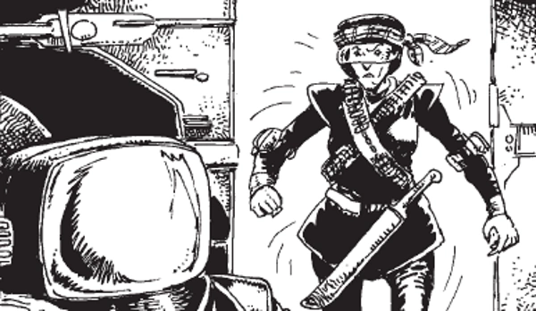

Judge Dredd's landlady was an early fixture of the strip that, along with Walter the Wobot, was designed to provide some comic relief but faded into the background over time.
Art by Carlos Ezquerra
| Story Title | Parts | Pages | w indicates a wraparound coverCovers | Year(s) | Issues | Writer | Artist | Colourist | Letterer |
|---|---|---|---|---|---|---|---|---|---|
From Judge Dredd[Krong] | 1 | 5 | Barry Mitchell 1 | 1977 | Reprints: 2KA'825 | Malcolm Shaw | Carlos Ezquerra | <-- p5, [b&w] | S. Richardson |
From Judge DreddThe Return of Rico | 1 | 6 | 0 | 1977 | 30 | Pat Mills | Mike McMahon | [b&w] | Tony Jacob |
From Judge Dredd[Mutie the Pig] | 2 | 9.5 | 0 | 1977 | Reprints: 351‑35234-35 | John Wagner | 1: Mike McMahon 2: Ian Gibson various | [b&w] | Tony Jacob |
From Judge DreddBlock Mania | 9 | 55 | 236 [w]: Brian Bolland 240: Brian Bolland 242: Brian Bolland 2,1w | 1981 | 236-244 | Alan Grant John Wagnervarious | Mike McMahon: 1‑2 Ron Smith: 3‑6 Steve Dillon: 7‑8 Brian Bolland: 9 various | <-- 14pp, [b&w] | Tom Frame: 1‑7 Steve Potter: 8‑9 various |
From Judge DreddThe Apocalypse War | 25 | 153 | 245: Carlos Ezquerra 250: Carlos Ezquerra 254: Carlos Ezquerra 256: Carlos Ezquerra 262: Robin Smith 265: Robin Smith 267: Brett Ewins 7 | 1982 | 245-267, 269-270 | Alan Grant John Wagnervarious | Carlos Ezquerra | <-- 46pp, [b&w] | Steve Potter: 1‑4 Tom Frame: 5‑25 various |
From Judge DreddDestiny's Angels | 8 | 66 | 281 [w]: Carlos Ezquerra 284: Carlos Ezquerra 286: Carlos Ezquerra 288: Carlos Ezquerra 1w,3 | 1982 | 281-288 | Alan Grant John Wagnervarious | Carlos Ezquerra | <-- 16pp, [b&w] | Tony Jacob |
From Judge DreddCardboard City | 3 | 22 | 644: Colin MacNeil 1 | 1989 | Reprints: M230643-645 | John Wagner | Cam Kennedy | <-- | Tom Frame |
From Whatever Happened to...Maria? | 1 | 6 | 0 | 2004 | Reprints: M388 (supplement)M215 | Gordon Rennie | Graham Manley | [b&w] | Tom Frame |
From Mega‑City 2099Inside Man | 1 | 9 | 0 | 2024 | M465 | Kenneth Niemand | Conor Boyle | [b&w] | Jim Campbell |
| year | episodes | pages |
| 1977 | 4 | 20.5 |
| 1978 | 0 | 0 |
| 1979 | 0 | 0 |
| 1980 | 0 | 0 |
| 1981 | 9 | 55 |
| 1982 | 33 | 219 |
| 1983 | 0 | 0 |
| 1984 | 0 | 0 |
| 1985 | 0 | 0 |
| 1986 | 0 | 0 |
| 1987 | 0 | 0 |
| 1988 | 0 | 0 |
| 1989 | 3 | 22 |
| 1990 | 0 | 0 |
| 1991 | 0 | 0 |
| 1992 | 0 | 0 |
| 1993 | 0 | 0 |
| 1994 | 0 | 0 |
| 1995 | 0 | 0 |
| 1996 | 0 | 0 |
| 1997 | 0 | 0 |
| 1998 | 0 | 0 |
| 1999 | 0 | 0 |
| 2000 | 0 | 0 |
| 2001 | 0 | 0 |
| 2002 | 0 | 0 |
| 2003 | 0 | 0 |
| 2004 | 1 | 6 |
| 2005 | 0 | 0 |
| 2006 | 0 | 0 |
| 2007 | 0 | 0 |
| 2008 | 0 | 0 |
| 2009 | 0 | 0 |
| 2010 | 0 | 0 |
| 2011 | 0 | 0 |
| 2012 | 0 | 0 |
| 2013 | 0 | 0 |
| 2014 | 0 | 0 |
| 2015 | 0 | 0 |
| 2016 | 0 | 0 |
| 2017 | 0 | 0 |
| 2018 | 0 | 0 |
| 2019 | 0 | 0 |
| 2020 | 0 | 0 |
| 2021 | 0 | 0 |
| 2022 | 0 | 0 |
| 2023 | 0 | 0 |
| 2024 | 1 | 9 |
| 2025 | 0 | 0 |
| 2026 | 0 | 0 |